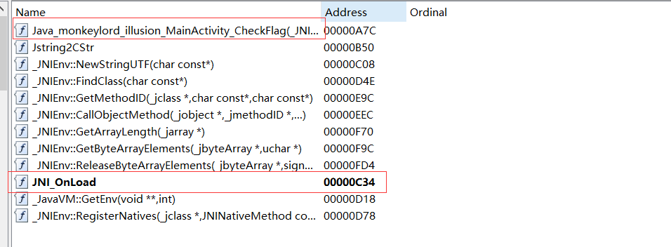

android JNI静态注册和动态注册
这几天在摸android的题目, 在XCTF里面做了一个ONLOAD来动态注册native的题目, 但是本身ida的export能够找到对应native函数名. 想找找ONLOAD注册方法和直接调用的关系, 就仔细去翻了一些相关的帖子.

这个OnLoad注册了一个名为CheckFlag的方法.
windows的exe在调用DLL的时候是通过IAT, 而IAT的填充是PE装载器调用GetProAddress()查找DLL的EAT来实现.
既然windows是查找export来获取库函数, 那android调用so是不是也是根据export来的?这个注册是不是改变的export来完成代替ChckFlag方法呢.
native方法分为静态注册和动态注册两种.(我的环境是java16)
静态注册
java的每个方法都会有一个Method对象, 而这个Method对象有两个成员:nativeFunc和insns.
当java构建这个native方法时, 会将该方法对应的Method对象的nativeFunc成员设置为dvmResolveNativeMethod, dvmResolveNativeMethod方法会按照方法的名称去查找对应的C方法.
1 2 3 4 5 6 7 8 9 10 11 12 13 14 15 16 17 18 19 20 21 22 23 24 25 26 27 28 29 30 31 32 33 34 35 36 37 38 39 40 41 42 43 44 45 46 47 48 49 50 51 52 53 54 55 56 57 58 void dvmResolveNativeMethod(const u4* args, JValue* pResult, const Method* method, Thread* self) { ClassObject * clazz = method-> if (dvmIsStaticMethod(method)) { if (!dvmIsClassInitialized(clazz) && !dvmInitClass(clazz)) { assert(dvmCheckException(dvmThreadSelf())); return; } } else { assert(dvmIsClassInitialized(clazz) || dvmIsClassInitializing(clazz)); } DalvikNativeFunc infunc = dvmLookupInternalNativeMethod(method); if (infunc != NULL) { IF_LOGVV() { char * desc = dexProtoCopyMethodDescriptor(&method-> LOGVV("+++ resolved native %s.%s %s, invoking" , clazz ->descriptor , method->name , desc); free(desc); } if (dvmIsSynchronizedMethod(method)) { ALOGE("ERROR: internal-native can't be declared 'synchronized'" ); ALOGE("Failing on %s.%s" , method ->clazz ->descriptor , method->name ); dvmAbort(); } DalvikBridgeFunc dfunc = (DalvikBridgeFunc) infunc; dvmSetNativeFunc((Method*) method, dfunc, NULL); dfunc(args, pResult, method, self); return; } void* func = lookupSharedLibMethod(method); if (func != NULL) { dvmUseJNIBridge((Method*) method, func); (*method -> return; } IF_ALOGW() { char * desc = dexProtoCopyMethodDescriptor(&method-> ALOGW("No implementation found for native %s.%s:%s" , clazz ->descriptor , method->name , desc); free(desc); } dvmThrowUnsatisfiedLinkError("Native method not found" , method); }
lookupSharedLibMethod函数用来查找SO层里面的方法, 再看下lookupSharedLibMethod代码
1 2 3 4 5 6 7 8 9 static void* lookupSharedLibMethod(const Method * method ) return (void*) dvmHashForeach (gDvm.nativeLibs, findMethodInLib, (void*) method );}
dvmHashForeach的注释是
1 2 3 4 5 6 7 8 9 int dvmHashForeach(HashTable* pHashTable , HashForeachFunc func , void * arg ) ;
findMethodInLib:
1 2 3 4 5 6 7 8 9 10 11 12 13 14 15 16 17 18 19 20 21 22 23 24 25 26 27 28 29 30 31 32 33 34 35 36 37 38 39 40 41 42 43 44 45 46 47 48 49 50 51 52 static int findMethodInLib (void * vlib, void * vmethod) const SharedLib* pLib = (const SharedLib*) vlib; const Method* meth = (const Method*) vmethod; char * preMangleCM = NULL ; char * mangleCM = NULL ; char * mangleSig = NULL ; char * mangleCMSig = NULL ; void * func = NULL ; int len; if (meth->clazz->classLoader != pLib->classLoader) { ALOGV ("+++ not scanning '%s' for '%s' (wrong CL)" , pLib->pathName, meth->name); return 0 ; } else ALOGV ("+++ scanning '%s' for '%s'" , pLib->pathName, meth->name); preMangleCM = createJniNameString (meth->clazz->descriptor, meth->name, &len); if (preMangleCM == NULL ) goto bail; mangleCM = mangleString (preMangleCM, len); if (mangleCM == NULL ) goto bail; ALOGV ("+++ calling dlsym(%s)" , mangleCM); func = dlsym (pLib->handle, mangleCM); if (func == NULL ) { mangleSig = createMangledSignature (&meth->prototype); if (mangleSig == NULL ) goto bail; mangleCMSig = (char *) malloc (strlen (mangleCM) + strlen (mangleSig) +3 ); if (mangleCMSig == NULL ) goto bail; sprintf (mangleCMSig, "%s__%s" , mangleCM, mangleSig); ALOGV ("+++ calling dlsym(%s)" , mangleCMSig); func = dlsym (pLib->handle, mangleCMSig); if (func != NULL ) { ALOGV ("Found '%s' with dlsym" , mangleCMSig); } } else { ALOGV ("Found '%s' with dlsym" , mangleCM); } bail: free (preMangleCM); free (mangleCM); free (mangleSig); free (mangleCMSig); return (int ) func; }
最终通过调用dlsym来查找so文件里面的方法, 这和windows的GetProAddress()很类似了.
在dvmResolveNativeMethod找到对应的方法后, 会对native方法对应的方法对象进行再一次赋值,
nativeFunc = dvmCallJNIMethod, insns = 找到的so中的方法地址.
dvmCallJNIMethod方法是一个bridge方法, 这个方法的作用就是调用insns对应的方法
当native方法对象构建好了之后, nativeFunc中已经有值, 这样就会直接执行nativeFunc方法
动态注册
动态注册是将RegisterNatives放在OnLoad方法里面, 在加载库的时候, 会通过dlsym调用Onload方法.
System.java:
1 2 3 public static void loadLibrary(String libname ) { Runtime .Runtime() .loadLibrary0(Reflection.getCallerClass () , libname); }
Runtime.class:
1 2 3 4 5 6 7 8 9 10 11 void loadLibrary0(Class <?> fromClass, String libname) { SecurityManager security = System .getSecurityManager(); if (security != null ) { security .checkLink(libname); } if (libname.indexOf((int )File.separatorChar) != -1 ) { throw new UnsatisfiedLinkError( "Directory separator should not appear in library name: " + libname); } ClassLoader.loadLibrary(fromClass, libname); }
ClassLoader.loadLibrary:
1 2 3 4 5 6 7 8 9 10 11 12 13 14 15 16 17 18 19 20 21 22 23 24 25 26 27 28 29 30 31 32 33 34 35 36 static NativeLibrary loadLibrary(Class<?> fromClass, String name) { ClassLoader loader = (fromClass == null ) ? null : fromClass .getClassLoader(); if (loader == null ) { NativeLibrary nl = BootLoader.getNativeLibraries().loadLibrary(fromClass, name); if (nl != null ) { return nl; } throw new UnsatisfiedLinkError ("no " + name + " in system library path: " + StaticProperty.sunBootLibraryPath()); } NativeLibraries libs = loader.libraries; String libfilename = loader.findLibrary(name); if (libfilename != null ) { File libfile = new File (libfilename); if (!libfile.isAbsolute()) { throw new UnsatisfiedLinkError ( "ClassLoader.findLibrary failed to return an absolute path: " + libfilename); } NativeLibrary nl = libs.loadLibrary(fromClass, libfile); if (nl != null ) { return nl; } throw new UnsatisfiedLinkError ("Can't load " + libfilename); } NativeLibrary nl = libs.loadLibrary(fromClass, name); if (nl != null ) { return nl; } throw new UnsatisfiedLinkError ("no " + name + " in java.library.path: " + StaticProperty.javaLibraryPath()); }
libs.loadLibrary():
1 2 3 4 5 6 7 8 9 public NativeLibrary loadLibrary(Class<?> fromClass , String name ) { assert name.indexOf(File.separatorChar ) < 0 ; NativeLibrary lib = findFromPaths(LibraryPaths.SYS_PATHS, fromClass , name ) ; if (lib == null && searchJavaLibraryPath) { lib = findFromPaths(LibraryPaths.USER_PATHS, fromClass , name ) ; } return lib; }
findFromPaths():
1 2 3 4 5 6 7 8 9 10 11 12 13 14 15 16 17 private NativeLibrary findFromPaths(String[] paths , Class<?> fromClass , String name ) { for (String path : paths) { File libfile = new File(path , System.mapLibraryName (name ) ); NativeLibrary nl = loadLibrary(fromClass , libfile ) ; if (nl != null) { return nl; } libfile = ClassLoaderHelper .AlternativeName(libfile ) ; if (libfile != null) { nl = loadLibrary(fromClass , libfile ) ; if (nl != null) { return nl; } } } return null; }
loadLibrary():
1 2 3 4 5 6 7 8 9 10 11 12 13 14 15 16 17 18 19 20 public NativeLibrary loadLibrary(Class <?> fromClass, File file ) { String name = findBuiltinLib(file .getName()); boolean isBuiltin = (name != null ); if (!isBuiltin) { name = AccessController.doPrivileged(new PrivilegedAction<>() { public String run() { try { return file .exists() ? file .getCanonicalPath() : null ; } catch (IOException e) { return null ; } } }); if (name == null ) { return null ; } } return loadLibrary(fromClass, name, isBuiltin); }
1 2 3 4 5 6 7 8 private NativeLibrary loadLibrary(Class<?> fromClass , String name , boolean isBuiltin ) { ... try { if (!lib.open () ) { return null; } ... }
1 2 3 4 5 6 7 boolean open ( if (handle != 0 ) { throw new InternalError ("Native library " + name + " has been loaded" ); } return load(this , name, isBuiltin, isJNI); }
然后发现居然最后调用了一个native :
1 private static native boolean load (NativeLibraryImpl impl, String name, boolean isBuiltin, boolean isJNI)
NativeLibraries.c:
1 2 3 4 5 6 7 8 9 10 11 12 13 14 15 16 17 18 19 20 21 22 23 24 25 26 27 28 29 30 31 32 33 34 35 36 37 38 39 40 41 42 43 44 45 46 47 48 49 50 51 52 53 54 55 56 57 58 59 60 61 62 63 64 65 66 67 68 69 70 Java_jdk_internal_loader_NativeLibraries_load (JNIEnv *env, jobject this, jobject lib, jstring name, jboolean isBuiltin, jboolean isJNI){ const char *cname; jint jniVersion; jthrowable cause ; void * handle; jboolean loaded = JNI_FALSE; if (!initIDs(env)) return JNI_FALSE; cname = JNU_GetStringPlatformChars(env, name, 0 ); if (cname == 0 ) return JNI_FALSE; handle = isBuiltin ? procHandle : JVM_LoadLibrary(cname); if (isJNI) { if (handle) { JNI_OnLoad_t JNI_OnLoad; JNI_OnLoad = (JNI_OnLoad_t)findJniFunction(env, handle, isBuiltin ? cname : NULL, JNI_TRUE); if (JNI_OnLoad) { JavaVM *jvm; (*env)->GetJavaVM(env, &jvm); jniVersion = (*JNI_OnLoad)(jvm, NULL) } else { jniVersion = 0x00010001 ; } cause = (*env)->ExceptionOccurred(env); if (cause ) { (*env)->ExceptionClear(env); (*env)->Throw(env, cause ); if (!isBuiltin) { JVM_UnloadLibrary(handle); } goto done; } if (!JVM_IsSupportedJNIVersion(jniVersion) || (isBuiltin && jniVersion < JNI_VERSION_1_8)) { char msg[256 ]; jio_snprintf(msg, sizeof(msg), "unsupported JNI version 0x%08X required by %s" , jniVersion, cname); JNU_ThrowByName(env, "java/lang/UnsatisfiedLinkError" , msg); if (!isBuiltin) { JVM_UnloadLibrary(handle); } goto done; } (*env)->SetIntField(env, lib, jniVersionID, jniVersion); } else { cause = (*env)->ExceptionOccurred(env); if (cause ) { (*env)->ExceptionClear(env); (*env)->SetLongField(env, lib, handleID, (jlong)0); (*env)->Throw(env, cause ); } goto done; } } (*env)->SetLongField(env, lib, handleID, ptr_to_jlong(handle)); loaded = JNI_TRUE; done: JNU_ReleaseStringPlatformChars(env, name, cname); return loaded; }
findJniFunction:
1 2 3 4 5 6 7 8 9 10 11 12 13 14 15 16 17 18 19 20 21 22 23 24 25 26 27 28 29 30 31 32 33 34 35 36 37 38 39 40 41 static void *findJniFunction (JNIEnv *env, void *handle, const char *cname, jboolean isLoad) const char *onLoadSymbols[] = JNI_ONLOAD_SYMBOLS; const char *onUnloadSymbols[] = JNI_ONUNLOAD_SYMBOLS; const char **syms; int symsLen; void *entryName = NULL ; char *jniFunctionName; int i; size_t len; if (isLoad) { syms = onLoadSymbols; symsLen = sizeof sizeof char *); } else { syms = onUnloadSymbols; symsLen = sizeof sizeof char *); } for (i = 0 ; i < symsLen; i++) { if ((len = (cname != NULL ? strlen (cname) : 0 ) + strlen (syms[i]) + 2 ) > FILENAME_MAX) { goto done; } jniFunctionName = malloc (len); if (jniFunctionName == NULL ) { JNU_ThrowOutOfMemoryError (env, NULL ); goto done; } buildJniFunctionName (syms[i], cname, jniFunctionName); entryName = JVM_FindLibraryEntry (handle, jniFunctionName); free (jniFunctionName); if (entryName) { break ; } } done: return entryName; }
buildJniFunctionName:
1 2 3 4 5 6 7 8 9 10 11 12 13 14 15 16 17 18 19 20 21 22 23 void buildJniFunctionName (const char *sym, const char *cname, char *jniEntryName) if (cname != NULL ) { char *p = strrchr (sym, '@' ); if (p != NULL && p != sym) { strncpy (jniEntryName, sym, (p - sym)); jniEntryName[(p-sym)] = '\0' ; strcat (jniEntryName, "_" ); strcat (jniEntryName, cname); strcat (jniEntryName, p); } else { strcpy (jniEntryName, sym); strcat (jniEntryName, "_" ); strcat (jniEntryName, cname); } } else { strcpy (jniEntryName, sym); } return ; }
JVM_FindLibraryEntry中调用了dlsym()
1 2 3 4 5 6 7 JNIEXPORT void * JNICALL JVM_FindLibraryEntry (void * handle, const char * name) { ... else { return dlsym (handle, name) } ... }
然后在Onload里面写RegisterNatives方法就可以进行方法注册:
RegisterNatives的第二个参数为JNINativeMethod类型, 这个类型的定义为:
1 2 3 4 5 typedef struct { const char * name; const char * signature; void * fnPtr; } JNINativeMethod;
最后对native方法对应的方法对象进行赋值, 和静态注册类似
nativeFunc = dvmCallJNIMethod, insns = 找到的so中的方法地址.
最后可以总结一些, 在静态注册的时候, 是通过dlsym查找so文件的export.动态注册的时候, 是事先对结构体中的函数指针进行赋值, 通过RegisterNatives进行注册.当注册好了之后, native方法对应的方法对象的成员nativeFunc==dvmCallJNIMethod, 就不会在再设置为dvmResolveNativeMethod, 而是直接执行vmCallJNIMethod, 调用insns的方法.
如果您喜欢此博客或发现它对您有用，则欢迎对此发表评论。 也欢迎您共享此博客，以便更多人可以参与。 如果博客中使用的图像侵犯了您的版权，请与作者联系以将其删除。 谢谢 ！